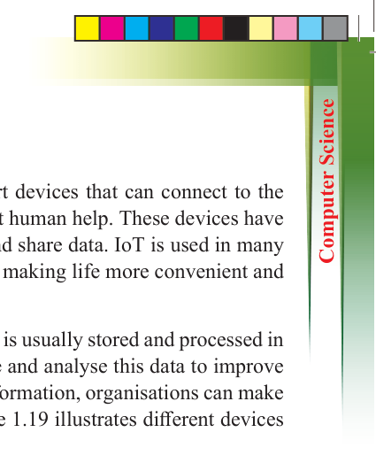
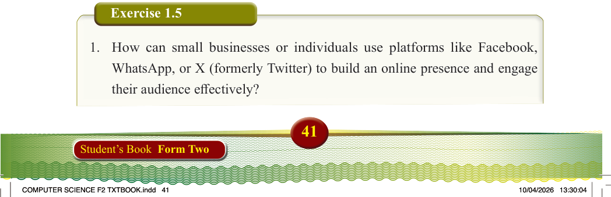

Internet of Things
The Internet of Things (IoT) is a system of smart devices that can connect to the
Internet and communicate with each other without human help. These devices have sensors and software that allow them to collect and share data. IoT is used in many areas, such as smart homes, cities, and industries, making life more convenient and efficient.
IoT devices generate large amounts of data, which is usually stored and processed in the cloud. Cloud services help businesses manage and analyse this data to improve efficiency and productivity. By using real-time information, organisations can make better decisions and work more effectively. Figure 1.19 illustrates different devices enabled with IoT.
Figure 1.19: Home appliances enabled with IoT
Exercise 1.5
1. How can small businesses or individuals use platforms like Facebook,
WhatsApp, or X (formerly Twitter) to build an online presence and engage their audience effectively?